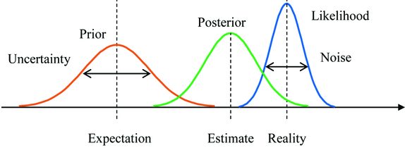
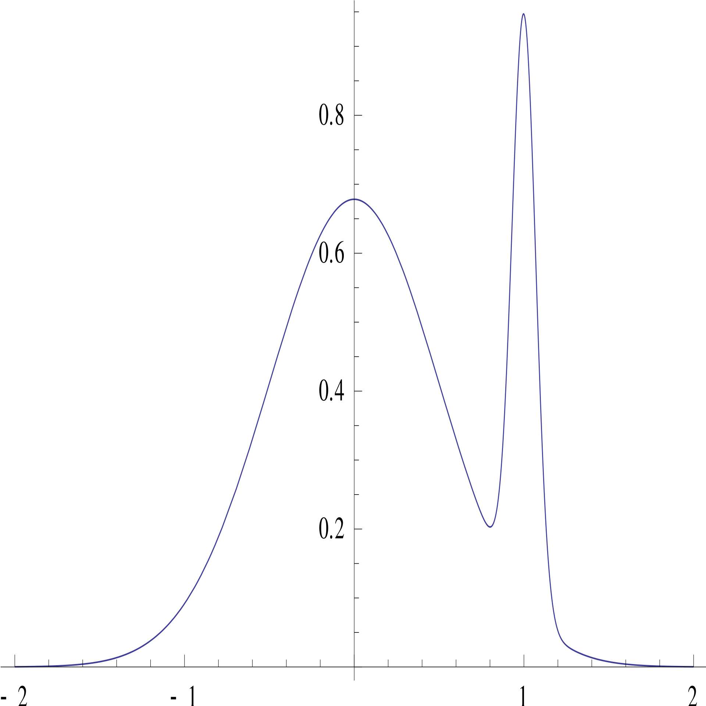
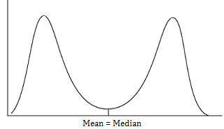
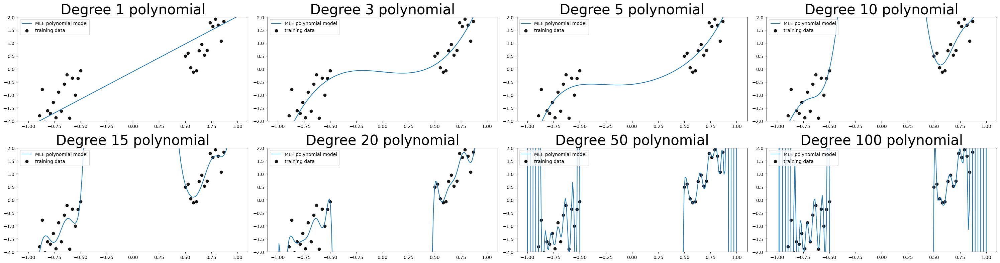
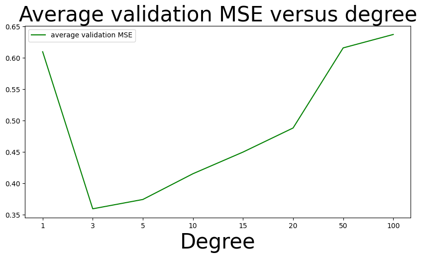
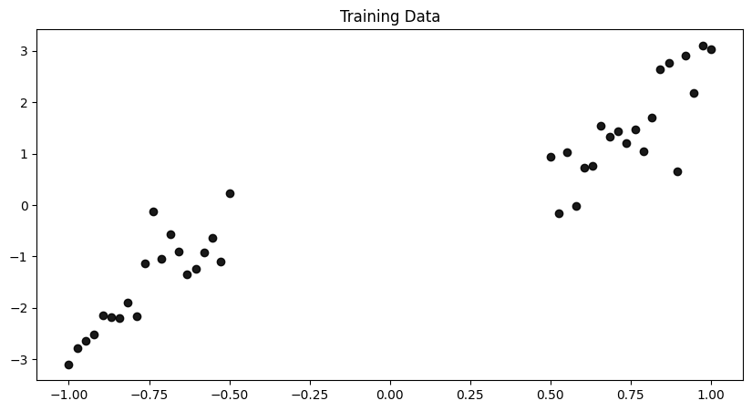
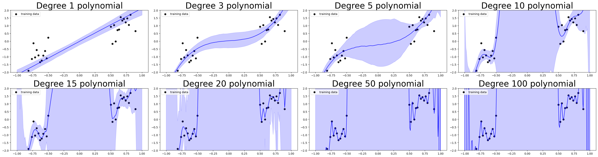
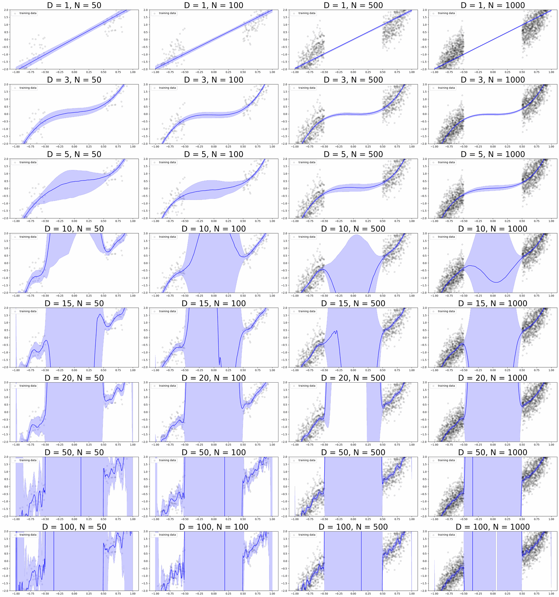

4. Bayesian versus Frequentist Inference#
This chapter is adapted from AM207 (Harvard, Fall 2021). Watch the recorded lecture.
In this chapter
Review of Bayesian Modeling
Examples of Conjugate and Non-Conjugate Models
Connections to Frequentist Inference
4.1. Review of Bayesian Modeling#
The Bayesian Modeling Process#
In order to make statements about \(Y\), the outcome, and \(\theta\), parameters of the distribution generating the data, we form the joint distribution over both variables and use the various marginals/conditional distributions to reason about \(Y\) and \(\theta\).
we form the joint distribution over both variables \(p(Y, \theta) = p(Y | \theta) p(\theta)\).
we can condition on the observed outcome to make inferences about \(\theta\),
\[ p(\theta | Y) = \frac{p(Y, \theta)}{p(Y)} \]where \(p(\theta | Y)\) is called the posterior distribution and \(p(Y)\) is called the evidence.
before any data is observed, we can simulate data by using our prior
\[ p(Y^*) = \int_\Theta p(Y^*, \theta) d\theta = \int_\Theta p(Y^* | \theta) p(\theta) d\theta \]where \(Y^*\) represents new data and \(p(Y^*)\) is called the prior predictive.
after observing data, we can simulate new data similar to the observed data by using our posterior
\[ p(Y^*|Y) = \int_\Theta p(Y^*, \theta|Y) d\theta = \int_\Theta p(Y^* | \theta) p(\theta | Y) d\theta \]where \(Y^*\) represents new data and \(p(Y^*|Y)\) is called the posterior predictive.
Bayesian Update#


Model Evaluation#
How do we know that our Bayesian model is a good fit for the data?
(Log-likelihood) We can compute the marginal log-likelihood of the data under our posterior. That is, give a set of test data \(\{y^*_1, \ldots, y^*_M\}\), compute
\[\begin{aligned} \log \prod_{m=1}^M p(\mathbf{y}^*_m | \text{Data}) &= \sum_{m=1}^M \log p(\mathbf{y}^*_m | \text{Data}) = \sum_{m=1}^M \log \int_\Theta p(\mathbf{y}^*_m | \theta) p(\theta| \text{Data}) d\theta \end{aligned}\]
This is simply called the log-likelihood of the data under the Bayesian model.(Posterior Predictive Check) We can also compare the synthetic data generated from our posterior predictive:
sample from the posterior \(\theta_s \sim p(\theta | Y)\)
plug the posterior samples into the likelihood, and sample synthetic data from the likelihood \(Y_s \sim p(Y | \theta_s)\).
We can then compare the synthetic data from the posterior predictive to the observed data.
Components of Bayesian Inference#
We see that in order to evaluate Bayesian models we need to be able to perform two tasks:
integration over the posterior (required by log-likelihood)
sampling from the posterior (required by the posterior predictive check).
Both requirements becomes easier if know the closed form expression for the posterior, e.g. if the prior is conjugate to the likelihood.
4.2. Examples of Conjugate and Non-Conjugate Models#
Bayesian Model for (Univariate) Gaussian Likelihood with Known Variance#
The Bayesian Model#
Let \(Y \sim \mathcal{N}(\mu, \sigma^2)\), with \(\sigma^2\) known. We place a normal prior on \(\mu\), \(\mu\sim\mathcal{N}(m, s^2)\).
Question: is our choice of prior appropriate?
Bayesian Model for (Univariate) Gaussian Likelihood with Known Variance#
Inference: The posterior \(p(\mu|Y)\) is then:
We can simplify the posterior as:
Thus, we see that the posterior is a normal distribution, \(\mathcal{N}\left(\frac{s^2Y + \sigma^2m}{s^2 + \sigma^2}, s^2\sigma^2\right)\).
Bayesian Model for (Univariate) Gaussian Likelihood with Known Mean#
The Bayesian Model#
Let \(Y \sim \mathcal{N}(\mu, \sigma^2)\), with \(\mu\) known. We place an inverse-gamma prior on \(\sigma^2\), \(\sigma^2\sim IG(\alpha, \beta)\).
Question: is our choice of prior appropriate?
Bayesian Model for (Univariate) Gaussian Likelihood with Known Mean#
Inference: The posterior \(p(\sigma^2|Y)\) is then:
We can simplify the posterior as:
Thus, we see that the posterior is an inverse gamma distribution, \(IG\left(\alpha + 0.5, \frac{(Y-\mu)^2}{2} + \beta\right)\).
Bayesian Model for (Univariate) Gaussian Likelihood with Unknown Mean and Variance#
Let \(Y \sim \mathcal{N}(\mu, \sigma^2)\), with both parameters unknown. We place a normal prior on \(\mu\), \(\mu\sim\mathcal{N}(m, s^2)\), and an inverse-gamma prior on \(\sigma^2\), \(\sigma^2\sim IG(\alpha, \beta)\).
The posterior \(p(\sigma^2|Y)\) is then:
Can the posterior be simplified so that we recognize the form of the distribution?
Going deeper: Bayesian Model for Poisson Likelihood
The Bayesian Model With the kidney cancer dataset in mind, let \(Y\sim Poi(N\theta)\), where \(N\) is the total population and \(\theta\) is the underlying cancer rate. We place a gamma prior on \(\theta\), \(\theta \sim Ga(\alpha, \beta)\).
Question: is our choice of prior appropriate?
Inference The posterior \(p(\theta|Y)\) is then:
We can simplify the posterior as:
Thus, we see that the posterior is a gamma distribution, \(Ga\left(\alpha + Y, N + \beta\right)\).
Non-Conjugate Models#
We know that conjugate priors yield closed-form expressions for the posterior. In all our examples, these posteriors have been both easy to sample from and easy to integrate over. That is, we can evaluate our Bayesian models: can compute the log-likelihood of the data and perform posterior predictive checks.
So why would we ever consider non-conjugate priors?
Suppose that \(Y\sim \mathcal{N}(\mu, 2)\) represent the height of a person randomly selected from a population. Would the conjugate prior \(\mu\sim \mathcal{N}(5.7, 1)\) be appropriate for this application?
If we wanted to use the prior \(\mu \sim Ga(5.7, 1)\), would we be able to derive a closed form expression for the posterior?
4.3. Connections with Frequentist Inference#
Point Estimates from the Posterior#
If you absolutely wanted to derive a point estimate for the parameters \(\theta\) in the likelihood from your Bayesian model, there are two common ways to do it:
the posterior mean
\[ \theta_{\text{post mean}} = \mathbb{E}_{\theta\sim p(\theta|Y)}\left[ \theta|Y \right] = \int \theta p(\theta|Y) d\theta \]the posterior mode or maximum a posterior (MAP) estimate
\[ \theta_{\text{MAP}} = \mathrm{argmax}_{\theta} p(\theta|Y) \]
Question: is it better to summarize the entire posterior using a point estimate? I.e. why should we keep the posterior distribution around?
Point Estimates Can Be Misleading#
The posterior mode can be an atypical point:


The posterior mean can be an unlikely point:


Comparison of Posterior Point Estimates and MLE#
Beta-Binomial Model for Coin Flips
Likelihood: \(Bin(N, \theta)\)
Prior: \(Beta(\alpha, \beta)\)
MLE: \(\frac{Y}{N}\)
MAP: \(\frac{Y + \alpha - 1}{N + \alpha + \beta - 2}\)
Posterior Mean: \(\frac{Y + \alpha}{N + \alpha + \beta}\)
Question: What is the effect of the prior on the posterior point estimates? Imagine if \(Y=10\), \(N=11\), \(\alpha=100\), \(\beta=300\). What if \(Y=1,000\), \(N=11,000\), \(\alpha=1\), \(\beta=3\)?
The Coin Toss Example: Revisited Yet Again#
Recall that one way to prevent the MLE from overfitting is to add regularization terms:
This is very similar to the MAP and posterior mean estimates:
MAP: \(\frac{Y + \alpha - 1}{N + \alpha + \beta - 2}\)
Posterior Mean: \(\frac{Y + \alpha}{N + \alpha + \beta}\)
In fact, we have see that one effect of adding a prior is that it regularizes our inference about \(\theta\).
Question: What happens to the MAP and posterior mean estimates as \(N\) (and hence \(Y\)) becomes very large?
Law of Large Numbers for Bayesian Inference#
In general, in Bayesian inference we are less interested asymptotic behavior. But the properties of the asymptotic distribution of the posterior can be useful.
Theorem: (Bernstein-von Mises)
“Under some conditions, as \(N\to \infty\) the posterior distribution converges to a Gaussian distribution centred at the MLE with covariance matrix given by a function of the Fisher information matrix at the true population parameter value.”
Consequences
The posterior point estimates approach the MLE, with large samples sizes.
It may be valid to approximate the posterior with a Gaussian, with large samples sizes. This will become a very important idea in the second half of the book!
Computational Comparisons#
Computation of the MLE is an optimization problem. Although difficult, there are many established methods for performing optimization (even when the objective function is not convex – i.e. many local optima).
More importantly, there are algorithms to perform general, automatic optimization (e.g. gradient descent) on a large class of functions – that is, we do not need to artisanally solve an optimization problem for each statistical model.
Computation of the posterior (thus far) is an process of choosing the right priors and noting that the posterior distribution is of the same type as the prior. The derivation is simple so long as we use conjugate priors. But many intuitively appropriate priors (like the inverse gamma and normal priors for a univariate gaussian) are not conjugate. In those cases, it becomes intractable to
compute posterior mean
simulate samples from the posterior (and hence simulate samples from the posterior predictive)
4.4. Summary#
What is the Bayesian modeling processing?
(Model Definition) Define the joint model over the data and the model parameters \(p(y, \theta)\). For this, you need to choose:
the likelihood \(p(y|\theta)\), e.g. \(y \sim \mathcal{N}(\theta, 2)\)
then prior \(p(\theta)\), e.g. \(\theta \sim \mathcal{N}(0, 1)\)
(Model Inference) Learn the best distribution over models that fits your data, \(p(\theta|y) = \frac{p(y|\theta)p(\theta)}{p(y)}\).
(Model Evaluation) Why is model evaluation hard? How do you evaluate a distribution over models, especially if we’re not doing regression (i.e. we have no covariates)?
Use the models in the posterior to generate synthetic data, in order to compare with real data, i.e. sample from the posterior predictive.
Compute the marginal log-likelihood of the data (train or test) over the posterior: \(\sum_{m=1}^M \log \int_\Theta p(\mathbf{y}^*_m | \theta) p(\theta| \text{Data}) d\theta\)
Why is any of this hard?
How do we choose a prior?
How do we compute the posterior distribution? Is there a standard procedure?
How do we sample from the posterior predictive?
How do we compute the log-likelihood?
Remember we said that we can get uncertainties from frequentist approaches to modeling too: by bootstrapping! There are even more connections between frequentist and Bayesian approaches:
Regularization of MLEs can be interpreted as posterior modes of Bayesian models! I.e. regularization terms correspond to (sometimes complex) priors!
If we want to mimic the frequentist approach of giving one best model we can reduce the posterior to a point estimate, what is wrong with this approach?
(Asymptotic Behavior) For sufficiently nice likelihoods, as the number of observations approach infinity, the posterior distribution approaches a Gaussian distribution with mean (and mode) centered at the MLE!
Wait, why do I care about the connections between frequentist and Bayesian approaches again?
4.5. Exercises#
These problems were originally assigned as homework. Data files are in the book’s data/ folder. Worked solutions, where available, are collapsed beneath the questions they answer; try each problem before expanding them.
Problem Set: Bayesian versus Frequentist Inference#
Exercise: Part I: Maximum Likelihood Estimators for Polynomial Regression
In this problem, you are given a function, generate_data, to generate toy datasets with a single predictor \(X\) representing patient age (normalized) and a single outcome \(y\) representing diastolic blood pressure (normalized and rescaled), and your task is to fit polynomial models to the data. That is, assume that the outcome \(y\) can be modeled by the following process:
where the \(w_d\), the parameters of the function \(f\), are unknown constants, and the degree \(D\) is a hyperparameter.
You’ll notice that in these datasets, the test input is sampled from a different distribution that the training input: the training input has a gap, there are no training input values in [-0.5, 0.5], where as the test input are sampled across [-1, 1]. This change of the distributions over the \(x\)-values between training and test is called covariate shift.
These toy datasets simulate a very common problem in machine learning: models are fitted on training data, but during deployment they are given data dissimilar to the training data (i.e. the model encounters covariate shift). As such, you should treat x_train, y_train as data available during model development and evaluation, and x_test as data you encounter during model deployment.
The goal in this problem set is to explore how to manage the risk of a deployed model under covariate shift. The ideas developed in this problem set will become a major focus in the latter part of the book and the foundation of an active area of current research.
(Effect of Model Complexity) Generate a toy dataset with 40 observations (set the parameter
number_of_points=20forgenerate_data, since twice the number ofnumber_of_pointswill be generated), then visualize the fit of MLE polynomial models, with degrees \(D = [1, 3, 5, 10, 15, 20, 50, 100]\) - you should train onx_trainand visualize by predicting onx_testprovided by the data generating function (x_testis a larger set of test points that includesx_train). You’ll need to be thoughtful about your visualization so that these different models can be visually compared in a meaningful way.
Discuss the effect of the choice of polynomial degree on the fit of the model (concretely describe why certain choices are unideal in the context of the problem).
Solution: Part I, Question 1
We fit MLE polynomial regressions of degrees \(D = [1,3,5,10,15,20,50,100]\) on a dataset with 40 observations.
# Instantiate an Linear Regression model object
linear_regressor = LinearRegression(fit_intercept=False)
# Degrees
D = [1, 3, 5, 10, 15, 20, 50, 100]
# Generate a random training samples from the true distribution over x
x_train, y_train, x_test = generate_data(number_of_points=20, noise_variance=0.3)
# Noisy test outcomes from the same cubic function
y_test = 3 * x_test**3 + np.random.normal(0, 0.3**0.5, size=x_test.shape)
# List of predictions
y_test_pred = []
y_train_pred = []
# Fit MLE polynomial models with different degrees to the dataset
for d in D:
# Make an instance of the PolynomialFeatures model to add polynomial powers to our covariates
poly = PolynomialFeatures(d)
# Fit a polynomial model
x_train_poly = poly.fit_transform(x_train.reshape((-1, 1)))
x_test_poly = poly.fit_transform(x_test.reshape((-1, 1)))
linear_regressor.fit(x_train_poly, y_train.reshape(-1, 1))
# Make predictions
y_test_pred.append(linear_regressor.predict(x_test_poly))
y_train_pred.append(linear_regressor.predict(x_train_poly))
y_test_pred = np.array(y_test_pred)
y_train_pred = np.array(y_train_pred)
# Visualize the polynomial models
fig, ax = plt.subplots(2, 4, figsize=(30, 8))
for i in range(len(D)):
ys = y_test_pred[i].flatten()
row = i // 4
col = i % 4
ax[row, col].plot(x_test, ys, label='MLE polynomial model')
ax[row, col].scatter(x_train, y_train, color='black', alpha=0.9, label='training data')
ax[row, col].legend(loc='upper left')
ax[row, col].set_title('Degree {} polynomial'.format(D[i]), fontsize= 30)
ax[row, col].set_ylim((-2, 2))
plt.tight_layout()
plt.show()


It’s clear that degree 1 is too simple to fit our training data; degree 3 and 5 appear to both fit the data well and degrees 10, 15 and 20 appear to overfit, in the sense that these models are clearly trying to capture the random and meaningless noise in the data. The problem with our observations is that there’s no way, by simply visualizing the data, that we can tell with certainty what is noise and what is signal in the data set! One way to quantify overfitting is by comparing the difference between training error (or likelihood) and test error (or likelihood).
for i in range(len(D)):
train_mse = np.mean((y_train - y_train_pred[i].flatten())**2)
test_mse = np.mean((y_test - y_test_pred[i].flatten())**2)
print('Degree {}: train mse {}, test mse {}'.format(D[i], train_mse, test_mse))
Degree 1: train mse 0.6541389744609577, test mse 0.5481374937369526
Degree 3: train mse 0.25001409102611877, test mse 0.3448381041433706
Degree 5: train mse 0.23933828565129778, test mse 0.4536789156953982
Degree 10: train mse 0.20052256444638958, test mse 54.54626503567295
Degree 15: train mse 0.16531646494232405, test mse 2872.1434021619716
Degree 20: train mse 0.10218784388547375, test mse 5649078.3728004135
Degree 50: train mse 0.004901139522703403, test mse 335496482258350.0
Degree 100: train mse 4.049119571098381e-05, test mse 10144558213093.092
Indeed the test MSE for degrees 10, 15 and 20 are larger than the training MSE, but the test MSE for the larger degree polynomial models are outrageous! So what’s going on here? From the visualizations of our models, we see that, the higher degree polynomial models take on insane values in place where there is no training data (i.e. in the gap region in the training data), whereas the actual data generating function (a cubic function) is actually quite flat and close to zero in the gap region. This explains the extremely large test MSE - our test data includes x-values from both the training data rich regions as well as the gap region.
So can we take the higher test MSE to be a sign of overfitting? Well not really - overfitting refers to the phenomenon of models doing well on the training data and very poorly on test data sampled from the same distribution as the training data. In our case, our test data is not sampled from the same places as the training data.
Let’s generate another toy training dataset from our data generating function and test our models on the new training dataset.
# Generate a random training samples from the true distribution over x
x_train_new, y_train_new, _ = generate_data(number_of_points=20, noise_variance=0.3)
# Fit MLE polynomial models with different degrees to the dataset
for d in D:
# Make an instance of the PolynomialFeatures model to add polynomial powers to our covariates
poly = PolynomialFeatures(d)
# Fit a polynomial model
x_train_poly = poly.fit_transform(x_train.reshape((-1, 1)))
x_new_poly = poly.fit_transform(x_train_new.reshape((-1, 1)))
linear_regressor.fit(x_train_poly, y_train.reshape(-1, 1))
# Make predictions
y_train_pred = linear_regressor.predict(x_train_poly).flatten()
y_new_pred = linear_regressor.predict(x_new_poly).flatten()
# Compute MSEs
train_mse = np.mean((y_train - y_train_pred)**2)
test_mse = np.mean((y_train_new - y_new_pred)**2)
print('Degree {}: train mse {}, test mse {}'.format(d, train_mse, test_mse))
Degree 1: train mse 0.6541389744609577, test mse 0.49546807482759486
Degree 3: train mse 0.25001409102611877, test mse 0.2473585491425815
Degree 5: train mse 0.23933828565129778, test mse 0.29206096381015917
Degree 10: train mse 0.20052256444638958, test mse 0.3125686701241528
Degree 15: train mse 0.16531646494232405, test mse 0.29028024080208303
Degree 20: train mse 0.10218784388547375, test mse 0.4074665008539373
Degree 50: train mse 0.004901139522703403, test mse 0.42732865649437424
Degree 100: train mse 4.049119571098381e-05, test mse 0.43626250188421595
It is clear from the model visualizations that degrees 20, 50 and 100 are very inappropriate for our dataset - since these polynomials are beginning to interpolate the data (i.e. going through every single training data point)!
(Model Selection) In Chapter 16, we will study a number of metrics commonly used for selecting between different MLE models. All of these metric essentially encode Occam’s Razor: select the minimal complexity of model that satisfies some pre-determined modeling goal.
For now, a very simple method for selecting the optimal degree is via cross-validation (by bootstrap):randomly sample two datasets,
x_train,x_valid, from the data generating function: one for training and one for validation. Fit an MLE polynomial model of degree \(d\) on the training data and evaluate its performance on the validation data. Over \(S\) number of such randomly sampled pairs of datasets, average the model’s validation performance.plot the validation score as a function of model complexity, the polynomial degree \(d\).
based on the plot, select the the minimal degree that achieves a high average validation performance (i.e. look for the ‘elbow’ of the plot).
Explain why performing model selection by cross-validation mitigates the risk of choosing an undesirable polynomial (identified in Question 1)?
Implement model selection by cross-validation for the toy dataset generated in Question 1 using MSE as your performance metric and select an optimal degree from \(D=[1,3,5,10,15,20,50,100]\).
Solution: Part I, Question 2
S = 50
validation_mse = []
# Repeat for S number of trials
for s in range(S):
# Generate a random training samples from the true distribution over x
x_train, y_train, _ = generate_data(number_of_points=20, noise_variance=0.3)
# Generate a random validation samples from the true distribution over x
x_valid, y_valid, _ = generate_data(number_of_points=20, noise_variance=0.3)
mse = []
# Fit MLE polynomial models with different degrees to the dataset
for d in D:
# Make an instance of the PolynomialFeatures model to add polynomial powers to our covariates
poly = PolynomialFeatures(d)
# Fit a polynomial model
x_train_poly = poly.fit_transform(x_train.reshape((-1, 1)))
x_valid_poly = poly.fit_transform(x_valid.reshape((-1, 1)))
linear_regressor.fit(x_train_poly, y_train.reshape(-1, 1))
# Make predictions
y_valid_pred = linear_regressor.predict(x_valid_poly).flatten()
mse.append(np.mean((y_valid - y_valid_pred)**2))
validation_mse.append(mse)
validation_mse = np.array(validation_mse)
# Average the validation MSE across trials
validation_mse = validation_mse.mean(axis=0)
# Visualize the average validation mse for each degree
fig, ax = plt.subplots(1, 1, figsize=(10, 5))
ax.plot(np.arange(len(D)), validation_mse, color='green', label='average validation MSE')
ax.set_xticks(np.arange(len(D)))
ax.set_xticklabels(D)
ax.set_title('Average validation MSE versus degree', fontsize= 30)
ax.legend(loc='upper left')
ax.set_xlabel('Degree', fontsize= 30)
plt.show()


It looks like the lowest average validation MSE is achieved at degree 3, although degree 5 also looks competitive in terms of having a low average validation MSE. The advantage of selecting models based on validation score is that we can more easily identify models that are too complex for the data, these models will tend to overfit to the training data (they are sensitive to minute changes in the training data) and will generally have higher MSE on validation data sampled from the same distribution. The reason we want to compute the average validation MSE over multiple validation datasets is that evaluating the performance of our models on one set of validation data can be misleading!
(Uncertainty Estimation) As you have seen in the Chapter 1 problem set, we often use the bootstrap predictive uncertainty of MLE models as an indicator of our confidence in the model’s output. Increasingly, in practice, decisions making are deferred to human experts when the model’s predictive uncertainty is too high.
Given your understanding of the dataset (x_trainandx_test), describe what the model uncertainty should ideally look like across the input space (i.e. if you plotted the model uncertainty as a function of \(x\), what would it look like)? Justify your answer: consider the context of the problem - the test input has undergone covariate shift and is dissimilar to the training input, what kind of uncertainty would help you mitigate risk under this condition?
A common practice for estimating predictive uncertainty is to fit a large number of (bootstrap) models on the training data (this collection of models is called an ensemble), then, at an input \(x\), use the variance of the ensemble predictions to estimate the uncertainty at \(x\). Plot the 95% predictive interval of 200 bootstrap MLE polynomial models for each degree \(D=[1,3,5,10,15,20,50,100]\), arrange your plots as subplots in a single figure. For which polynomial degree do you obtain the predictive uncertainty that is most ideal (according to your description above)? Is this the degree you selected in Question 2? Explain why you would or would not expect the optimal degree in Question 2 to yield the most ideal uncertainty estimate.
Make the same plots the 95% predictive intervals for degrees \(D=[1,3,5,10,15,20,50,100]\), with models fitted on larger training datasets - setnumber_of_pointsto 50, 100, 500, 1000 (arrange all these plots in a single figure). What is happening to the predictions of the ensemble in the training data rich region? What is happening to the predictions of the ensemble in the training data poor region? Are these expected behaviours (relate what you see in both cases to the asymptotic properties of MLE)?
When the training data is abundant (number_of_points=1000), are any of the 95% predictive intervals ideal (according to your description above)? What does this imply about the feasibility of using the variance of the ensemble predictions to estimate predictive uncertainty at an input \(x\)?
Solution: Part I, Question 3
Let’s first look at a visualization of the training data!
# The training data for the ensembles below
x_train, y_train, x_test = generate_data(number_of_points=20, noise_variance=0.3)
# Visualize the training data
fig, ax = plt.subplots(1, 1, figsize=(10, 5))
ax.scatter(x_train, y_train, color='black', alpha=0.9)
ax.set_title('Training Data')
plt.show()


It looks like there is a large gap in the training data, \([-0.5, 0.5]\)! If we want to defer decisions to humans experts when the model is uncertain - i.e. have a higher chance of being wrong - then we might want to do so for test x-values that are very dissimilar to the training data. That is, the farther the test x-value is away from the data the more uncertain we’d want the model to be. As such, we’d expect the model uncertainty to be the highest at \(x=0\) and progressively become lower as we approach the training data (\(x=0.5\), \(x=-0.5\)).
S = 200
predictions = []
# Repeat for S number of trials
for s in range(S):
# Bootstrap: resample the training data with replacement
idx = np.random.choice(len(x_train), size=len(x_train), replace=True)
x_boot, y_boot = x_train[idx], y_train[idx]
y_test_pred = []
# Fit MLE polynomial models with different degrees to the dataset
for d in D:
# Make an instance of the PolynomialFeatures model to add polynomial powers to our covariates
poly = PolynomialFeatures(d)
# Fit a polynomial model
x_train_poly = poly.fit_transform(x_boot.reshape((-1, 1)))
x_test_poly = poly.fit_transform(x_test.reshape((-1, 1)))
linear_regressor.fit(x_train_poly, y_boot.reshape(-1, 1))
# Make predictions
y_test_pred.append(linear_regressor.predict(x_test_poly).flatten())
predictions.append(y_test_pred)
predictions = np.array(predictions)
# Compute the 97.5 th percentile of the posterior predictive predictions
pred_ub = np.percentile(predictions, 97.5, axis=0)
# Compute the 50 th percentile of the posterior predictive predictions
pred_mean = np.percentile(predictions, 50.0, axis=0)
# Compute the 2.5 th percentile of the posterior predictive predictions
pred_lb = np.percentile(predictions, 2.5, axis=0)
# Visualize the polynomial models
fig, ax = plt.subplots(2, 4, figsize=(30, 8))
for i in range(len(D)):
row = i // 4
col = i % 4
ax[row, col].scatter(x_train, y_train, color='black', alpha=0.9, label='training data') #scatter plot the training data
# Plot 95% predictive interval
ax[row, col].fill_between(x_test, pred_ub[i], pred_lb[i], color='blue', alpha=0.2)
ax[row, col].plot(x_test, pred_mean[i], color='blue', alpha=0.9)
ax[row, col].legend(loc='upper left')
ax[row, col].set_title('Degree {} polynomial'.format(D[i]), fontsize= 30)
ax[row, col].set_ylim((-2, 2))
plt.tight_layout()
plt.show()


We see from the above that, the predictive uncertainties of a degree 1 model is approximately constant across \([-1, 1]\) and hence this model is as confident on training data poor regions as it is on training data rich regions.
The degree 3 model is more uncertain in the training data poor region \([-0.5, 0.5]\), but its uncertainty doesn’t scale with distance from the training data - meaning, it’s just as uncertain at \(x=0\) as it is at \(x=0.3\).
For all models with degree 5 and above, we have higher uncertainty in the gap region \([-0.5, 0.5]\) than in the training data rich regions. But for degrees 10 and above, again the uncertainty does not scale with distance from the training data - meaning, it’s just as uncertain at \(x=0\) as it is at \(x=0.3\). Furthermore, the uncertainties of these models are extreme! Even their uncertainties on training data rich regions are extremely high (higher than the amount of noise in the data)!
Given our description of the ideal predictive uncertainty of a model, we might want to choose a degree 5 polynomial. But note that this is not the model we picked via cross-validation in Question 2! There, the law of parsimony (or Occam’s Razor) dictated that we choose a degree 3 polynomial model since it was the minimally complex model that had the best validation performance. Now we see that a degree 3 model may be complex enough capture the signal in our data, but it’s not expressive enough to generate higher predictive uncertainties in \([-0.5, 0.5]\) (generating higher uncertainties in the gap means fitting functions that can go through the data but curve higher or lower in \([-0.5, 0.5]\), can you see why?).
So what happens when we have a large number of observations?
S = 100
sample_size = [50, 100, 500, 1000]
predictions = []
x_train_samples = []
y_train_samples = []
for size in sample_size:
pred_per_data = []
# One training dataset of this size
x_train_sample, y_train_sample, _ = generate_data(number_of_points=size, noise_variance=0.3)
# Repeat for S number of trials
for s in range(S):
# Bootstrap: resample the training data with replacement
idx = np.random.choice(len(x_train_sample), size=len(x_train_sample), replace=True)
x_boot, y_boot = x_train_sample[idx], y_train_sample[idx]
y_test_pred = []
# Fit MLE polynomial models with different degrees to the dataset
for d in D:
# Make an instance of the PolynomialFeatures model to add polynomial powers to our covariates
poly = PolynomialFeatures(d)
# Fit a polynomial model
x_train_poly = poly.fit_transform(x_boot.reshape((-1, 1)))
x_test_poly = poly.fit_transform(x_test.reshape((-1, 1)))
linear_regressor.fit(x_train_poly, y_boot.reshape(-1, 1))
# Make predictions
y_test_pred.append(linear_regressor.predict(x_test_poly).flatten())
pred_per_data.append(y_test_pred)
x_train_samples.append(x_train_sample)
y_train_samples.append(y_train_sample)
predictions.append(pred_per_data)
# Visualize the polynomial models
fig, ax = plt.subplots(8, 4, figsize=(30, 32))
for i in range(len(sample_size)):
y_preds = predictions[i]
# Compute the 97.5 th percentile of the posterior predictive predictions
pred_ub = np.percentile(y_preds, 97.5, axis=0)
# Compute the 50 th percentile of the posterior predictive predictions
pred_mean = np.percentile(y_preds, 50.0, axis=0)
# Compute the 2.5 th percentile of the posterior predictive predictions
pred_lb = np.percentile(y_preds, 2.5, axis=0)
for j in range(len(D)):
ax[j, i].scatter(x_train_samples[i], y_train_samples[i], color='black', alpha=0.1, label='training data') #scatter plot the training data
# Plot 95% predictive interval
ax[j, i].fill_between(x_test, pred_ub[j], pred_lb[j], color='blue', alpha=0.2)
ax[j, i].plot(x_test, pred_mean[j], color='blue', alpha=0.9)
ax[j, i].legend(loc='upper left')
ax[j, i].set_title('D = {}, N = {}'.format(D[j], sample_size[i]), fontsize=30)
ax[j, i].set_ylim((-2, 2))
plt.tight_layout()
plt.show()


Not covered here: a discussion of the ensembles fitted on larger training sets (what happens in the data-rich and data-poor regions, and whether any of the intervals are ideal when data is abundant).
(Effect of Regularization) In practice, MLE models are nearly always trained with regularization (since they tend to overfit to the training data). Here, we will explore the effect of adding \(\ell_2\) regularization to our MLE polynomial models (that is, use the
Ridgeregression model fromsklearnafter augmenting your input with polynomial features).
For a toy dataset with 40 observations (number_of_points=20), plot the 95% predictive intervals for degrees \(D = [1,3,5,10,15,20,50,100]\) and regularization strengthsalpha = [5e-3, 1e-2, 1e-1, 1e0, 1e1](you should organize these plots in a grid).
Describe the effect of regularization on the bootstrap uncertainties. Looking at these results, are the goals of \(\ell_2\) regularization and obtaining useful predictive uncertainty estimation necessarily well-aligned?
Exercise: Part II: Bayesian Polynomial Regression
In this problem, your task is to perform Bayesian polynomial regression on the toy datasets in Part I. That is, assume that the outcome \(y\) can be modeled by the following process:
where \(\alpha\) is a hyperparameter and must be fixed before modeling and inference begins.
(Bayesian Kernel Regression) Just as we can treat a polynomial regression model like a multi-linear regression model after transforming the input data by adding polynomial features. We can treat Bayesian polynomial regression like Bayesian linear regression on top of the transformed inputs. Formally, the map that takes an input \(\mathbf{x}_n \in \mathbb{R}^{D'}\) and transforms it into a new input \(\phi(\mathbf{x}_n) \in \mathbb{R}^{D}\) is called a feature map, \(\phi: \mathbb{R}^{D'} \to \mathbb{R}^{D}\), for 1-dimensional input \(x \in \mathbb{R}\), the polynomial feature map of degree \(D\) is defined by
\[\begin{split}\begin{aligned} \\\phi: \mathbb{R} &\to \mathbb{R}^D\\ x &\mapsto [1, x, x^2, \ldots, x^D]\\ \end{aligned}\end{split}\]
Thus, we can write rewrite Bayesian polynomial regression as\[\begin{split}\begin{aligned} \\y &= \mathbf{w}^\top \mathbf{x} + \epsilon, \quad \epsilon \sim \mathcal{N}(0, 0.3)\\ \mathbf{w} &\sim \mathcal{N}(0, \alpha I_{D\times D})\\ \end{aligned}\end{split}\]
Denote the \(N\times D\) matrix of transformed inputs by \(\Phi\), where the \(n\)-th row of the matrix is the \(n\)-th input \(\mathbf{x}_n\) transformed by the feature map, \(\phi(\mathbf{x}_n)\). Using this notation, write out the closed form for the posterior for Bayesian polynomial regression in terms of \(\Phi\) (you don’t need to rederive anything, just make the appropriate substitutions in the formula you derived in the Chapter 1 problem set).
(Effect of Model Complexity) For Bayesian kernel regression, you need to pre-determine the number of features (i.e. \(D\)) and the hyperparameter \(\alpha\) in the prior. For a toy dataset with 40 observations (set number_of_points=20), visualize the 95% posterior predictive interval for \(D = [1,3,5,10,15,20,50,100]\) and \(\alpha = [0.1, 1, 5, 10, 100]\) (arrange these visualizations in a grid), using Bayesian polynomial regression.
Based on your visualization, describe in intuitive terms what is the role of \(\alpha\) and \(D\) in determining the shape of the posterior predictive uncertainty.
Hint: Read Question 3 before implementing Question 2, you can implement both at the same time.
Optional: When the feature map \(\phi\) is a general (usually non-linear transformation), applying Bayesian linear regression on the transformed input is called Bayesian Kernel Regression. Choose your own non-linear feature map \(\phi: \mathbb{R} \to \mathbb{R}^5\) and visualize the 95% posterior predictive interval of the Bayesian kernel regression for your choice of \(\phi\) and \(D = [1,3,5,10,15,20,50,100]\), \(\alpha = [0.1, 1, 5, 10, 100]\). Compare the visualization to the that for Bayesian polynomial regression. Does the posterior predictive of your Bayesian kernel regression capture important properties of the posterior predictive of the Bayesian polynomial regression model?
Note: we highly recommend that you implement the following feature map:\[\begin{split}\begin{aligned} \phi: \mathbb{R}^{D'} &\to \mathbb{R}^D\\ \mathbf{x} &\mapsto \left[\sqrt{\frac{2}{D}} \cos(w_1^\top x + b_1), \ldots, \sqrt{\frac{2}{D}} \cos(w_D^\top x + b_D)\right] \end{aligned}\end{split}\]
where \(b_d \sim [0, 2\pi]\) and \(w_d \sim \mathcal{N}(0, \beta I_{D'\times D'})\) need to be randomly sampled and fixed before modeling and inference. For this exercise, we suggest setting \(\beta=10\). The features generated by \(\phi\) are called Random Fourier Features. As the number of features \(D\) tends to infinity, the resulting Bayesian kernel regression model tends to an important type of Bayesian (nonparametric) model called Gaussian Process model.
(Model Evaluation and Uncertainty Estimation) Remember that a direct visual comparison of the 95% predictive interval against the training data is impractical! Rather, to evaluate the fit of the Bayesian model on the observed data, we evaluate the marginal log-likelihood of the data under the posterior. Given a test set \(\{(\mathbf{x}^*_m, \mathbf{y}^*_m)\}\), the log posterior predictive likelihood or, simply, the log-likelihood is computed as:
\[\begin{split}\begin{aligned} \\ \log \prod_{m=1}^M p(\mathbf{y}^*_m | \mathbf{x}^*_m, \text{Data}) &= \sum_{m=1}^M \log p(\mathbf{y}^*_m | \mathbf{x}^*_m, \text{Data})\\ &= \sum_{m=1}^M \log \int_\mathbf{w} p(\mathbf{y}^*_m | \mathbf{x}^*_m, \mathbf{w}) p(\mathbf{w}| \text{Data}) d\mathbf{w} \end{aligned}\end{split}\]
i.e. the log-likelihood at a single observation \((\mathbf{x}^*_m, \mathbf{y}^*_m)\) is the log of the likelihood of the observation averaged over all models in the posterior.
For Bayesian linear regression, with posterior \(\mathcal{N}(\mu_N, \Sigma_N)\) we have that\[ p(y^*_m | x^*_m, \text{Data}) = \mathcal{N}(\mu^\top\mathbf{x}^*_m, \sigma^2 + (\mathbf{x}^*_m)^\top\Sigma_N\mathbf{x}^*_m) \]where \(\sigma^2\) is the variance of the observation noise.
For each choice of \(D\) and \(\alpha\) in Question 2, compute the log-likelihood of the training data. Examine a models with the higher log-likelihoods and a few with lower log-likelihoods, what is the relationship between log-likelihood and predictive uncertainty? In particular, does a higher log-likelihood indicate “better” predictive uncertainty?
Exercise: Part III: Broader Impact Analysis
Starting in 2020, major machine learning conferences are beginning to ask authors as well as reviewers to explicitly consider the broader impact of new machine learning methods. To properly evaluate the potential good or harm that a piece of technology (AI or not) can do to the general public, we need to be aware that no technology is deployed in ideal conditions or in perfectly neutral contexts. In order to assess the potential broader impact of technology, we need to analyze the social systems/institutions of which these technologies will become a part.
To help you analyze the broader impact of your technology, begin by considering the following questions:
I. Identify the relevant socio-technical systems
In what social, political, economic system could the tech be deployed?
How would the tech be used in these systems (what role will it take in the decision making processes)?
II. Identify the stakeholders
Who are the users?
Who are the affected communities (are these the users)?
Hint: users are typically decision makers who will use the technology as decision aids (e.g. doctors), whereas affected communities may be folks who are impacted by these decisions but who are not represented in the decision making process (e.g. patients).
III. What types of harm can this tech do?
What kinds of failures can this tech have?
What kinds of direct harm can these failures cause?
What kinds of harm can the socio-technical system cause?
Hint: many technical innovations have niche applications, they may sit in a long chain of decision making in a complex system. As such, it may seem, at first glance, that these technologies have no immediate real-life impact. In these cases, it’s helpful to think about the impact of the entire system and then think about how the proposed innovations aid, hamper or change the goals or outcomes of this system.
IV. What types of good can this tech do?
What kinds of needs do these users/communities have?
What kinds of constraints do these users/communities have?
(Impact) Analyze the broader impact of these polynomial models. Focus on anticipating ways these models can interact with other components of the decision systems in which they will be deployed, identifying end-users, affected communities as well as anticipating the effects (positive and negative) on affected communities (in particular, does the model have the same effect on all subpopulations in the affected communities?).
Specifically address how predictive uncertainty can impact decision making when the models are deployed.
(Bayesian versus Frequentist Uncertainty) Compare the types of predictive uncertainties that are generated by Bayesian models and ensembles. Characterize the advantages and disadvantages of bootstrap uncertainties from an ensemble. Describe an situation where it would be better to compute bootstrap uncertainties rather than posterior predictive uncertainties from a Bayesian model.
Hint: For example, consider situations where the data is scarce versus situations where the data is abundant; consider situations where clinicians can provide guidance on model selection using domain expertise versus situations where we would not know how patterns in the data would extrapolate to new populations of patients.
Characterize the advantages and disadvantages of posterior predictive uncertainties from a Bayesian model. Describe an application where it is better to use these uncertainties rather than bootstrap uncertainties from an ensemble.
(Measuring Uncertainty) From your experiments, are any of the model evaluation metrics considered in this assignment (MSE, log-likelihood) appropriate for evaluating the quality of predictive uncertainty far away from the training data, that is, if we are concerned about the performance of models under covariate shift should we use these metrics to perform model selection?
Do our commonly used “best practices” of training machine learning models help or hamper our ability to train models with useful predictive uncertainties?
What would be a good metric for measuring uncertainty? How would you define “good” uncertainty in the first place?
Hint: Can you formulate a definition of “good” uncertainty without referencing a specific down-stream task?
4.6. Further Reading#
Bayesian versus Frequentist Inference